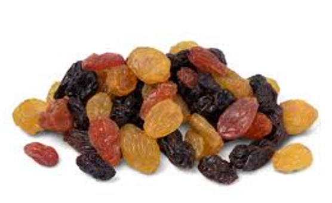
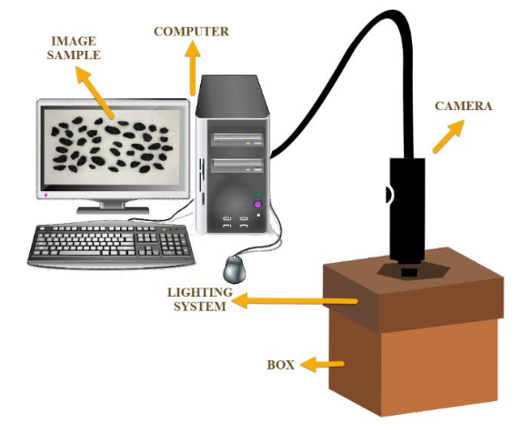
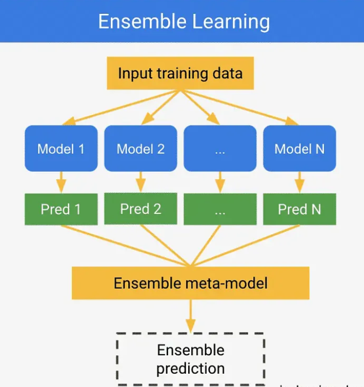
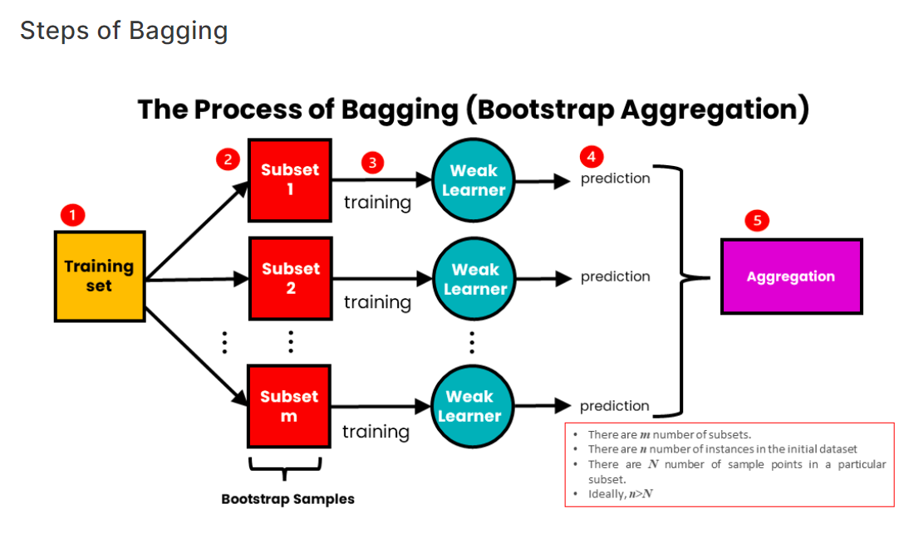

1. Analisis Untuk mengetahui Kategori Kismis(Raisin)#
Link menuju website yang sudah kami buat atau hosting :
Untuk Extrasi Gambar : https://mrtopeng.pythonanywhere.com/
Untuk Klasifikasi : http://raisin.bmcwaterpool.my.id/
Tujuan Analisis Penyortiran Kategori Jenis Kismis Untuk Bisnis Industri:#
Jadi Tujuan Dari Analisis ini bertujuan untuk pengembangan sistem penyortiran Industri makanan, terutama yang bergerak dalam produksi dan pengolahan kismis, sering menghadapi tantangan dalam identifikasi dan pemisahan kategori kismis. Proses manual yang sebelumnya digunakan seringkali memakan waktu, mahal, dan tidak sepenuhnya akurat. Selain itu, kualitas hasil identifikasi dapat bervariasi bergantung pada tingkat keahlian dan pengalaman personel yang terlibat.
Apa Itu Kismis ?#
Sebelum kita masuk proses selanjutnya kita harus mengenal apa itu kismis. Kismis adalah buah kering yang dihasilkan dari pengeringan anggur, khususnya varietas anggur beri yang kecil dan manis. Proses pembuatan kismis melibatkan pengeringan anggur segar, yang kemudian menghasilkan buah yang kecil, manis, dan berwarna gelap. Kismis sering digunakan sebagai camilan atau bahan tambahan dalam berbagai resep makanan dan minuman, karena memiliki rasa manis alami dan tekstur yang kenyal.
Pengeringan merupakan metode pengawetan buah yang lama dan hemat biaya. Proses pengeringan anggur agar dapat menjadi kismis dapat dilakukan dengan beberapa cara, seperti pengeringan di pohon, pengeringan terbuka, pengeringan dalam ruang terkendali, dan pengeringan dalam gudang. Proses pengeringan ini dipengaruhi oleh faktor-faktor seperti variasi anggur, usia anggur, kondisi tanah dan iklim, manajemen pertanian, dan lain-lain. Semua faktor ini berkontribusi pada kualitas akhir produk anggur. Selain itu, parameter fisik dan kimia dari anggur yang baru dipanen juga mempengaruhi kualitas kismis yang dihasilkan. Kualitas mikrobiologis juga merupakan hal penting dalam menciptakan produk anggur yang sehat. Hal” tersebut dapat kita gunakan juga untuk mengetahui kategori kismis nantinya.
Terdapat berbagai metode untuk menilai kualitas dari kismis. Di antaranya adalah metode tradisional yang dilakukan secara manual oleh manusia. Akan tetapi, metode tradisional cenderung memakan waktu yang lama dan berpotensi terjadinya human error. Untuk mengatasi hal tersebut, berbagai peneliti kemudian mengembangkan metode alternatif untuk mengevaluasi kualitas kismis dengan machine vision system (Mollazade et al., 2012; Karimi et al., 2017; Cinar et al., 2020). Pengembangan metode ini diharapkan dapat menjadi dasar pengembangan sistem penyortiran kismis untuk meningkatkan efisiensi di industri. Dibawah ini Gambar dari machine vision system.
Referensi Sumber Penjelasan : https://dergipark.org.tr/tr/download/article-file/1227592
Setelah Memahami dan mengerti Kismis itu apa mulai dari darimana asalnya, cara mengolahnya sampai bisa digunakan untuk apa aja buah kismis ini. Kita langsung ketahap Data Understanding atau memahami datasets kismis untuk proses klasifikasi.
2. Data Understanding / Memahami data kismis#
Data understanding adalah salah satu tahapan dalam proses analisis data yang bertujuan untuk memahami data yang akan diolah sebelum langkah-langkah analisis lebih lanjut dilakukan. Dalam tahap ini, fokus utamanya adalah untuk mengumpulkan informasi tentang data, mengeksplorasi karakteristiknya, dan memahami konteksnya. Pada Analisis kali ini case kita yakni memahami datasets Raisin namun sebelumnya kita harus mengambil datasets dulu supaya data itu pasti apa yang akan kita pahami dan lakukan proses klasifikasi.
Pengumpulan Data#
Mencari Datasets#
Langkah pertama pada pegumpulan data adalah dengan mencari dataset yang akan kita gunakan, sesuai penjelasan di atas kita akan menggunakan Dataset Raisin yang bersumber dari UCI Datasets :
Sumber Datasets Raisin : https://archive.ics.uci.edu/dataset/850/raisin
Mengambil dan Menampilkan Datasets#
Setelah menentukan Datasets langkah selanjutnya yakni menampilkan atau mengambil datasets tersebut.
from ucimlrepo import fetch_ucirepo
# fetch dataset
raisin = fetch_ucirepo(id=850)
# data (as pandas dataframes)
data = raisin.data.original
# menyimpan hasil komputasi ke dalam csv
data.to_csv("raisin.csv", index=True)
print(data.info()) #untuk menampilkan info fitur-fitur yang ada di tabel
<class 'pandas.core.frame.DataFrame'>
RangeIndex: 900 entries, 0 to 899
Data columns (total 8 columns):
# Column Non-Null Count Dtype
--- ------ -------------- -----
0 Area 900 non-null int64
1 MajorAxisLength 900 non-null float64
2 MinorAxisLength 900 non-null float64
3 Eccentricity 900 non-null float64
4 ConvexArea 900 non-null int64
5 Extent 900 non-null float64
6 Perimeter 900 non-null float64
7 Class 900 non-null object
dtypes: float64(5), int64(2), object(1)
memory usage: 56.4+ KB
None
!pip install ucimlrepo
from ucimlrepo import fetch_ucirepo
# fetch dataset
raisin = fetch_ucirepo(id=850)
# data (as pandas dataframes)
raisin_fitur=raisin.data.features
raisin_class=raisin.data.targets
df_raisin=raisin_fitur.join(raisin_class)
df_raisin.to_csv("raisin.csv", index=False)
#variable features
print(df_raisin)
DEPRECATION: Loading egg at c:\users\adi sahrul r\appdata\local\programs\python\python312\lib\site-packages\nmslib-2.1.2-py3.12-win-amd64.egg is deprecated. pip 24.3 will enforce this behaviour change. A possible replacement is to use pip for package installation.. Discussion can be found at https://github.com/pypa/pip/issues/12330
Requirement already satisfied: ucimlrepo in c:\users\adi sahrul r\appdata\local\programs\python\python312\lib\site-packages (0.0.6)
Area MajorAxisLength MinorAxisLength Eccentricity ConvexArea \
0 87524 442.246011 253.291155 0.819738 90546
1 75166 406.690687 243.032436 0.801805 78789
2 90856 442.267048 266.328318 0.798354 93717
3 45928 286.540559 208.760042 0.684989 47336
4 79408 352.190770 290.827533 0.564011 81463
.. ... ... ... ... ...
895 83248 430.077308 247.838695 0.817263 85839
896 87350 440.735698 259.293149 0.808629 90899
897 99657 431.706981 298.837323 0.721684 106264
898 93523 476.344094 254.176054 0.845739 97653
899 85609 512.081774 215.271976 0.907345 89197
Extent Perimeter Class
0 0.758651 1184.040 Kecimen
1 0.684130 1121.786 Kecimen
2 0.637613 1208.575 Kecimen
3 0.699599 844.162 Kecimen
4 0.792772 1073.251 Kecimen
.. ... ... ...
895 0.668793 1129.072 Besni
896 0.636476 1214.252 Besni
897 0.741099 1292.828 Besni
898 0.658798 1258.548 Besni
899 0.632020 1272.862 Besni
[900 rows x 8 columns]
Jadi, kode tersebut digunakan untuk mengambil dataset “Raisin” dari UCI Machine Learning Repository, memisahkan fitur-fiturnya dan target variabelnya, menggabungkannya menjadi satu DataFrame, menyimpan DataFrame tersebut ke dalam file CSV, dan mencetak DataFrame tersebut. Data diatas akan kita gunakan untuk Analisis Kasus kali ini, maka sebelum kita melakukan proses selanjutnya kita harus memahami datasets tersebut untuk klasifikasi kategori dari kismis.
Memahami Data#
Deskripsi Penjelasan datasets, Pada Dataset ini menjelaskan bahwa kismis adalah buah kering yang dihasilkan dari pengeringan anggur, khususnya varietas anggur beri yang kecil dan manis. Proses pembuatan kismis melibatkan pengeringan anggur segar, yang kemudian menghasilkan buah yang kecil, manis, dan berwarna gelap. Kismis sering digunakan sebagai camilan atau bahan tambahan dalam berbagai resep makanan dan minuman, karena memiliki rasa manis alami dan tekstur yang kenyal. Studi kasus kali ini untuk mengetahui jenis Kismis yang ada dalam data yang kita ambil dari data uci repository. Data yang kita gunakan yaitu ada 7 fitur yaitu : Area, MajorAxisLength, MinorAxisLength, Eccentricity, ConvexArea, Extent, Perimeter dan 2 kelas yaitu Kecimen dan Besni. Kualitas dari data Raisin Setiap fitur dari data tersebut memiliki 900 data dari UCI Datasets hasil dari mesin sortir dari Penelitian Di Turkey, 450 yaitu termasuk kelas kecimen dan 450 kelas besni. Data tidak memiliki missing values tapi memiliki Outlier sebanyak 207. Berikut penjelasan tentang fitur pada data raisin ini.
Segmentasi#
Sample Gambar Kismis :

Area:

Deskripsi: Jumlah piksel yang terdapat di dalam batas-batas raisin. Jumlah piksel dalam batas butir kismis menunjukkan ukuran atau luas dari butir kismis tersebut. Semakin besar nilai area yang dihitung, semakin besar ukuran butir kismis. Untuk menghitung ukuran ini, kita perlu menghitung luas dari setiap butir kismis dengan cara menjumlahkan semua piksel yang ada di dalam butir tersebut. Setiap piksel yang terhitung akan menambah total luas area butir kismis.

Tipe Data: Numerik. Ukuran: Satuan piksel persegi.
Fungsi yang dipakai pada implementasi Extract Features Untuk Area :
moments[‘m00’] Digunakan Menghitung Luas Objek: m00 memberikan luas dari objek dalam gambar. Misalnya, dalam gambar biner, m00 adalah jumlah piksel dengan nilai 1 (menunjukkan objek) dalam gambar.
MajorAxisLength:

Deskripsi: Panjang sumbu utama yaitu garis terpanjang yang dapat ditarik pada kismis. Mengukur lingkaran dilakukan dengan menghitung jarak antara batas butir kismis dan piksel di sekitarnya. Ini memberikan informasi tentang ukuran “utama” atau “panjang” dari butir kismis. Nilai yang lebih tinggi menunjukkan bahwa butir kismis cenderung memiliki bentuk yang lebih panjang atau memanjang. Dengan demikian, semakin besar nilai yang dihasilkan, semakin panjang atau membujur bentuk butir kismis tersebut.

Tipe Data: Numerik (continues) Ukuran: Satuan piksel.
Fungsi yang dipakai pada implementasi Extract Features Untuk Major Axis Length :
major_axis_length = moments[‘mu20’] ** 0.5
MinorAxisLength:

Deskripsi: Panjang sumbu kecil yang merupakan garis terpendek yang dapat ditarik pada kismis. Yakni Mengarah pada panjang sumbu minor dari setiap butir kismis dalam dataset, sumbu minor adalah salah satu sumbu dari elips yang mewakili bentuk geometris butir kismis. Ini memberikan informasi tentang ukuran “minor” atau “lebar” dari butir kismis. Nilai yang lebih rendah menunjukkan bahwa butir kismis cenderung memiliki bentuk yang lebih bulat. Oleh karena itu, semakin kecil nilai sumbu minor, semakin bulat dan lebih lebar bentuk butir kismis tersebut, menunjukkan proporsi yang lebih seragam.

Tipe Data: Numerik (Continue) Ukuran: Satuan piksel.
Fungsi yang dipakai pada implementasi Rumus Extract Features Untuk Minor Axis Length :
minor_axis_length = moments[‘mu02’] ** 0.5
Eccentricity:

Deskripsi: Eksentrisitas, Ukuran eksentrisitas elips yang memiliki momen yang sama dengan kismis. Di antara 0 dan 1, di mana nilai 0 menunjukkan elips sempurna dan nilai mendekati 1 menunjukkan elips yang sangat memanjang.

Tipe Data: Numerik Ukuran: Tidak memiliki satuan karena merupakan perbandingan.
Fungsi yang dipakai pada implementasi Rumus Extract Features Untuk Eccentricity : eccentricity = ((moments[‘mu20’] - moments[‘mu02’]) ** 2 + 4 * moments[‘mu11’] ** 2) ** 0.5 / (moments[‘mu20’] + moments[‘mu02’])
ConvexArea:

Deskripsi: Luas daerah raisin yang melingkupi bentuk kismis secara konveks. Mengarah pada luas area terkecil yang dapat menutupi setiap butir kismis dalam dataset dengan poligon konveks. Ini memberikan informasi tentang “area minimal” yang dibutuhkan untuk menutupi butir kismis dengan poligon konveks. Area minimal ini bisa memberikan indikasi tentang kompleksitas bentuk butir kismis. Semakin besar luas area minimal, semakin kompleks atau tidak beraturan bentuk butir kismis tersebut. Sebaliknya, bentuk yang lebih sederhana atau bulat akan membutuhkan area yang lebih kecil untuk ditutupi dengan poligon konveks.

Tipe Data: Numerik. Ukuran: Satuan piksel persegi.
Fungsi yang dipakai pada implementasi Rumus Extract Features Untuk Convex Area :
convex_area = cv2.contourArea(cv2.convexHull(largest_contour))
Extent:

Deskripsi: Rasio luas kismis terhadap luas persegi yang melingkupinya. Mengarah ke ukuran yang menggambarkan seberapa banyak area dari suatu objek yang tertutup oleh kontur objek tersebut. Dalam konteks butir kismis, extent memberikan informasi tentang seberapa “penuh” atau “kompleks” butir kismis tersebut. Nilai extent berkisar antara 0 dan 1, di mana nilai 1 menunjukkan bahwa seluruh area butir kismis tertutup oleh kontur, sementara nilai yang lebih rendah menunjukkan bahwa ada bagian dari area butir kismis yang tidak tertutup atau memiliki “lubang” di dalamnya. Dengan kata lain, semakin rendah nilai extent, semakin besar kemungkinan adanya bagian kosong atau celah dalam butir kismis, sehingga mengindikasikan tingkat kompleksitas atau ketidaksepenuhan butir tersebut.

Tipe Data: Numerik (Continuous) Ukuran: Tidak memiliki satuan karena merupakan perbandingan.
Fungsi yang dipakai pada implementasi Rumus Extract Features Untuk Extent :
extent = area / convex_area
Perimeter:

Deskripsi: Panjang keliling kismis. Sebuah objek dalam konteks citra digital mengacu pada panjang lengkung luar dari kontur objek tersebut. Dalam kasus butir kismis, perimeter mengukur total panjang dari semua garis yang membentuk batas butir kismis tersebut. Panjang ini memberikan informasi tentang “kompleksitas” atau “detail” dari batas butir kismis. Semakin tinggi nilainya, semakin kompleks batas butir kismisnya, karena lebih banyak garis yang membentuk kontur butir tersebut, menunjukkan adanya lebih banyak detail pada batas butir kismis.

Tipe Data: Numerik (Continuous) Ukuran: Tidak memiliki satuan karena merupakan perbandingan.
Class: Kelas target dari raisin, yaitu jenis Kecimen atau Besni. Tipe Data: Categorical
Fungsi yang dipakai pada implementasiRumus Extract Features Untuk Perimeter :
perimeter = cv2.arcLength(largest_contour, True)
Dari 7 fitur diatas terdapat 1 Class yang digunakan untuk kategori jenis Kismis tersebut yakni Besni dan kecimen dibawah ini Penjelasan dan perbedaan Kategori dari Class Kismis.
Perbedaan & Penjelasan 2 Kategori Kismis :
Kismis Kecimen: Kismis kecimen umumnya lebih kecil dan lebih padat dibandingkan dengan kismis besni. Mereka biasanya memiliki ukuran sekitar 0,5 cm hingga 1 cm dalam diameter. Kismis Kecimen adalah variasi kismis dengan ukuran yang lebih kecil dari kismis biasa, sering kali diproduksi dari varietas anggur yang lebih kecil. Meskipun ukurannya kecil, kismis kecimen memiliki beragam penggunaan dalam berbagai jenis hidangan. Pertama-tama, mereka dapat dinikmati secara langsung sebagai camilan sehat atau dicampur dengan kacang-kacangan atau granola untuk menambahkan rasa manis alami. Selain itu, kismis kecimen sering digunakan sebagai penyedap dalam hidangan seperti salad, muesli, atau yogurt. Mereka juga sering diolah dalam resep makanan, seperti roti, kue, atau hidangan kari, untuk memberikan sentuhan manis yang lezat.
Kismis Besni: Kismis besni cenderung lebih besar dan lebih berair daripada kismis kecimen. Ukurannya bisa bervariasi dari sekitar 1 cm hingga lebih dari 2 cm dalam diameter. Kismis Besni adalah varietas kismis yang berasal dari wilayah Besni di Turki. Kismis ini dikenal karena memiliki rasa yang manis dan tekstur yang kenyal. Karena kualitasnya yang unggul, kismis Besni sering dicari oleh pecinta kismis di seluruh dunia. Mereka digunakan dalam berbagai cara yang mirip dengan kismis kecimen dan kismis lainnya. Kismis Besni dapat dimakan langsung sebagai camilan, dicampur ke dalam berbagai hidangan seperti salad, muesli, atau yogurt, atau digunakan dalam berbagai resep makanan seperti roti, kue, atau hidangan kari. Kualitasnya yang tinggi membuat kismis Besni menjadi pilihan yang populer di dapur rumah tangga maupun industri makanan dan minuman.
Explore / Mengetahui Kualitas Datasets Raisin dan memahami#
Dari Explore data raisin yang kita dapatkan kualitas dari data Raisin Setiap fitur dari data tersebut memiliki 900 data dari UCI Datasets hasil dari mesin sortir dari Penelitian Di Turkey, 450 yaitu termasuk kelas kecimen dan 450 kelas besni. Data tidak memiliki missing values tapi memiliki Outlier sebanyak 207 dan tidak perlu dihapus untuk outlier nya karena data outlier tersebut masih terakomodasi untuk menentukan sebuah kategori kismis. Setelah kita menampilkan data dan mengetahui Penjelasan dari pemahaman fitur dari datasets tersebut kiti bisa menampilkan Lebih secara rinci informasi atau pemahaman dari dataset Raisin tersebut. selanjutnya untuk memahami dan mengetahui lebih dalam, kita detail kan untuk Spesifikasi atau fitur dan Class yang ada pada datasets, seperti mengetahui tipe data nya, mengetahui jumlah data nya, jumlah fitur dan classnya. Dibawah ini adalah Spesifikasi Detail dari datasets.
Jumlah Data Fitur dan Tipe Data#
df_raisin.info()
<class 'pandas.core.frame.DataFrame'>
RangeIndex: 900 entries, 0 to 899
Data columns (total 8 columns):
# Column Non-Null Count Dtype
--- ------ -------------- -----
0 Area 900 non-null int64
1 MajorAxisLength 900 non-null float64
2 MinorAxisLength 900 non-null float64
3 Eccentricity 900 non-null float64
4 ConvexArea 900 non-null int64
5 Extent 900 non-null float64
6 Perimeter 900 non-null float64
7 Class 900 non-null object
dtypes: float64(5), int64(2), object(1)
memory usage: 56.4+ KB
Bisa kita ketahui dari hasil output code tersebut dalam datasets terdapat 900 data masing-masing 7 Features dan 1 Class disana juga mengecek tipedata dari setiap Kolom atau fiturnya.
Jumlah Data Dari Datasets Raisin#
num_data = df_raisin.shape[0]
print("Jumlah data dalam dataset Raisin:", num_data)
Jumlah data dalam dataset Raisin: 900
Diatas sudah bisa kita ketahui bahwa datasets record nya sebanyak 900 data.
Jumlah Class pada data / Kategori setiap Class#
Jadi kita melakukan pengecekan terhadap data Raisin berpakah masingmasing Class atau kategori dari 2 Kategori yakni Kecimen dan Besni. Dibawah ini adalah code untuk menampilkannya.
df_raisin.groupby('Class').size()
Class
Besni 450
Kecimen 450
dtype: int64
Seperti hasil output diatas menghasilkan masing-masing Class Kategorinya menghasilkan data yang seimbang yakni 450 data per Kategorinya.
Besni = 450 Data Record .
Kecimen = 450 Data Record.
Deskripsi Datasets#
# Deskripsi Dari Datasets Raisin
des = df_raisin.describe()
print("Deskripsi Data Raisin:")
print(des)
Deskripsi Data Raisin:
Area MajorAxisLength MinorAxisLength Eccentricity \
count 900.000000 900.000000 900.000000 900.000000
mean 87804.127778 430.929950 254.488133 0.781542
std 39002.111390 116.035121 49.988902 0.090318
min 25387.000000 225.629541 143.710872 0.348730
25% 59348.000000 345.442898 219.111126 0.741766
50% 78902.000000 407.803951 247.848409 0.798846
75% 105028.250000 494.187014 279.888575 0.842571
max 235047.000000 997.291941 492.275279 0.962124
ConvexArea Extent Perimeter
count 900.000000 900.000000 900.000000
mean 91186.090000 0.699508 1165.906636
std 40769.290132 0.053468 273.764315
min 26139.000000 0.379856 619.074000
25% 61513.250000 0.670869 966.410750
50% 81651.000000 0.707367 1119.509000
75% 108375.750000 0.734991 1308.389750
max 278217.000000 0.835455 2697.753000
Kode diatas Menunjukkan deskripsi atau rangkuman statistik deskriptif dari DataFrame dibawah ini penjelasan detailnya :
Count: Menunjukkan jumlah entri non-null di setiap kolom. Dalam hal ini, terdapat 900 entri untuk setiap kolom.
Mean: Merupakan nilai rata-rata dari setiap kolom. Misalnya, rata-rata kolom pertama adalah 87804.127778, kolom kedua adalah 430.929950, dan seterusnya.
Std (Standard Deviation): Menunjukkan seberapa jauh data tersebar dari nilai rata-rata. Standar deviasi yang lebih tinggi menunjukkan variabilitas yang lebih besar dalam data. Semakin kecil nilainya, semakin dekat data dengan nilai rata-rata.
Min (Minimum): Nilai minimum dalam setiap kolom. Ini adalah nilai terkecil dalam data.
25th Percentile (Q1): Nilai yang membagi data menjadi dua bagian. Sebanyak 25% data berada di bawah nilai ini. Juga dikenal sebagai kuartil pertama.
50th Percentile (Median/Q2): Nilai yang membagi data menjadi dua bagian yang sama besar. Juga dikenal sebagai median atau kuartil kedua.
75th Percentile (Q3): Nilai yang membagi data menjadi dua bagian. Sebanyak 75% data berada di bawah nilai ini. Juga dikenal sebagai kuartil ketiga.
Max (Maximum): Nilai maksimum dalam setiap kolom. Ini adalah nilai terbesar dalam data.
Identifikasi Kualitas Data#
Identifikasi data ada beberapa tahap yakni mulai dari pengecekan atau deteksi data tersebut apakah terdapat Data Duplikat, Missing Value, dan Outlier.Jika terdapat duplikasi data maka kita bisa menghapusnya. Jika terdapat missing value kita juga dapat melakukan proses imputasi data yang null atau missing dengan beberapa metode yakni metode Knn dan Mean. Lalu Tahap selanjutnya kita melakukan Deteksi Outlier jika terdapat data outlier yang terlalu jauh. Meskipun terdeteksi adanya outlier namun model dianggap dapat mengakomodasinya sehingga outlier tidak dihilangkan. Maka dibawah ini urutan tahapan Preprocessing Data :
Deteksi Data Missing Values
Deteksi Data Outlier
Deteksi Duplikasi Data
1. Deteksi Data Missing Values#
Code dibawah ini melakukan pengecekan apakah terdapat data missing values dan dimunculkan jumlahnya masing-masing disetiap fiturnya.
import pandas as pd
# Melakukan pengecekan apakah terdapat missing value dalam setiap kolom
missing_val = df_raisin.isnull().sum()
# Menampilkan berapa jumlah adanya missing value untuk setiap kolomnya
print("Jumlah nilai yang hilang untuk setiap kolom:")
print(missing_val)
# Melakukan pengecekan apakah ada nilai null atau missing value
if missing_val.sum() == 0:
print("Tidak ada missing value.")
else:
print("Terdapat missing value dalam dataset.")
Jumlah nilai yang hilang untuk setiap kolom:
Area 0
MajorAxisLength 0
MinorAxisLength 0
Eccentricity 0
ConvexArea 0
Extent 0
Perimeter 0
Class 0
dtype: int64
Tidak ada missing value.
Dari hasil pengecekan data diatas dapat kita simpulkan bahwasannya tidak terdapat adanya missing value pada data (Raisin). Maka dari hasil tersebut kita tidak perliu melakukan Proses imputasi data missing value.
2. Deteksi Data Outlier#
Disini kita mempunyai 2 cara untuk deteksi outlier yakni Interquartile Range (IQR) dan Local Outlier Factor (LOF) berikut penjelasan dari2 cara atau metode untuk data outlier.
Interquartile Range (IQR):
IQR adalah metode statistik sederhana untuk mendeteksi outlier. Ini didasarkan pada rentang interkuartil (selisih antara kuartil ketiga dan kuartil pertama).
Titik data dianggap sebagai outlier jika berada di bawah Q1 - 1.5IQR atau di atas Q3 + 1.5IQR, di mana Q1 adalah kuartil pertama (25th percentile) dan Q3 adalah kuartil ketiga (75th percentile).
Local Outlier Factor (LOF):
LOF adalah metode yang mengukur kepadatan lokal dari titik data untuk menentukan seberapa jauh titik tersebut dari tetangganya. Ini sangat efektif dalam mendeteksi outlier dalam dataset yang memiliki kluster atau distribusi yang kompleks.
LOF menggunakan parameter n_neighbors untuk menentukan berapa banyak tetangga yang akan digunakan untuk menghitung kepadatan lokal, dan contamination untuk menentukan proporsi outlier dalam dataset.
Code dibawah ini melakukan pengecekan apakah terdapat data outlier dan dimunculkan jumlahnya masing-masing di setiap fiturnya.
import matplotlib.pyplot as plt
# Mendefinisikan kolom-kolom yang ingin diamati
columns = ['Area', 'MajorAxisLength', 'MinorAxisLength', 'Eccentricity', 'ConvexArea', 'Extent', 'Perimeter']
# Menghitung IQR untuk setiap kolomnya
Q1 = df_raisin[columns].quantile(0.25)
Q3 = df_raisin[columns].quantile(0.75)
IQR = Q3 - Q1
# Menentukan ambang outlier
outlier_threshold = 1.5
# Identifikasi outlier di setiap kolomnya
outliers = ((df_raisin[columns] < (Q1 - outlier_threshold * IQR)) | (df_raisin[columns] > (Q3 + outlier_threshold * IQR)))
# Menghitung jumlah outlier di setiap kolom
num_outliers = outliers.sum()
# Buat boxplot untuk setiap kolom dengan outlier
fig, axs = plt.subplots(1, len(columns), figsize=(16, 4))
# Iterasi setiap kolom dan plot boxplot
for i, column in enumerate(columns):
axs[i].boxplot(df_raisin[column])
axs[i].set_title(column)
axs[i].set_xlabel('Column')
axs[i].set_ylabel('Value')
axs[i].text(0.85, 0.85, f'Outliers: {num_outliers[column]}', transform=axs[i].transAxes, bbox=dict(facecolor='red', alpha=0.5))
plt.tight_layout()
plt.show()
# Tampilkan jumlah outlier di setiap kolom
print("Jumlah Data Outlier Setiap Kolom Fiturnya:")
print(num_outliers)
total_outliers = num_outliers.sum()
print("Total Jumlah Data Outlier:", total_outliers)
---------------------------------------------------------------------------
ModuleNotFoundError Traceback (most recent call last)
Cell In[8], line 1
----> 1 import matplotlib.pyplot as plt
3 # Mendefinisikan kolom-kolom yang ingin diamati
4 columns = ['Area', 'MajorAxisLength', 'MinorAxisLength', 'Eccentricity', 'ConvexArea', 'Extent', 'Perimeter']
ModuleNotFoundError: No module named 'matplotlib'
Pada Kode diatas mengahasilkan output data Outlier sejumlah 207 data dari semua kolom fitur datasets. Namun Meskipun terdeteksi adanya outlier namun model dianggap dapat mengakomodasinya sehingga outlier tidak dihilangkan. Jadi kita tidak perlu melakukan penghapusan data Outlier kita langsung ke proses Modelling. Setelah melakukan proses Preprocecing kita langsung ke Metode Modelling Yakni Gaussian Naives Bayes.
Referensi Informasi : https://journal.lppmunindra.ac.id/index.php/JOTI/article/download/13951/5553
from sklearn.neighbors import LocalOutlierFactor
from sklearn.metrics import precision_score
import matplotlib.pyplot as plt
from ucimlrepo import fetch_ucirepo
import pandas as pd
import numpy as np
# Fetch dataset directly from UCIML repository
raisin = fetch_ucirepo(id=850)
# Extract features and targets
raisin_fitur = raisin.data.features
raisin_class = raisin.data.targets
# Define feature names and target name
feature_names = ["Area", "Perimeter", "MajorAxisLength", "MinorAxisLength", "Eccentricity", "ConvexArea", "Extent"]
target_name = "Class"
# Create DataFrame from features and target
df_raisin = pd.DataFrame(np.hstack((raisin_fitur, raisin_class.values.reshape(-1, 1))), columns=feature_names + [target_name])
# Create LOF model
lof = LocalOutlierFactor(n_neighbors=20, contamination=0.013)
# Predict outliers for each numeric feature
outlier_indices = []
for column in feature_names:
# Get feature values
feature_values = df_raisin[column].values.reshape(-1, 1)
# Predict outliers
y_pred = lof.fit_predict(feature_values)
# Add outlier indices to the list
outlier_indices.extend([(i, column) for i, label in enumerate(y_pred) if label == -1])
# Remove duplicate outlier indices
outlier_indices = list(set(outlier_indices))
# Display found outlier indices
print("OUTLIER")
for i in outlier_indices:
print(f"Outlier ditemukan pada baris => {i[0]}, pada kolom fitur => {i[1]}")
# Collect row indices that contain outliers
outlier_row_indices = [index[0] for index in outlier_indices]
# Display data on rows containing outliers
outlier_data = df_raisin.iloc[outlier_row_indices]
print("DATA")
print("Data pada baris yang mengandung outlier:")
print(outlier_data)
# Assume you have ground truth labels for outliers
# For example, in this list, value 1 indicates an outlier, and 0 indicates not an outlier
ground_truth_labels = [1 if i in outlier_row_indices else 0 for i in range(len(df_raisin))]
# Generate outlier predictions based on outlier_row_indices
predicted_labels = [1 if i in outlier_row_indices else 0 for i in range(len(df_raisin))]
# Calculate precision
precision = precision_score(ground_truth_labels, predicted_labels)
print("PRECISION")
print(f"Precision: {precision}")
# Visualize outliers for each numeric feature
for column in feature_names:
plt.figure(figsize=(10, 6))
plt.scatter(range(len(df_raisin[column])), df_raisin[column], label=column)
outlier_indices_for_column = [i[0] for i in outlier_indices if i[1] == column]
plt.scatter(outlier_indices_for_column, df_raisin[column].iloc[outlier_indices_for_column], color='r', label="Outlier")
plt.xlabel("Index")
plt.ylabel(column)
plt.title(f"Outlier Detection for {column}")
plt.legend()
plt.show()
OUTLIER
Outlier ditemukan pada baris => 335, pada kolom fitur => ConvexArea
Outlier ditemukan pada baris => 382, pada kolom fitur => Extent
Outlier ditemukan pada baris => 741, pada kolom fitur => MinorAxisLength
Outlier ditemukan pada baris => 395, pada kolom fitur => MajorAxisLength
Outlier ditemukan pada baris => 192, pada kolom fitur => Perimeter
Outlier ditemukan pada baris => 15, pada kolom fitur => Area
Outlier ditemukan pada baris => 34, pada kolom fitur => MinorAxisLength
Outlier ditemukan pada baris => 506, pada kolom fitur => ConvexArea
Outlier ditemukan pada baris => 487, pada kolom fitur => Extent
Outlier ditemukan pada baris => 192, pada kolom fitur => MinorAxisLength
Outlier ditemukan pada baris => 880, pada kolom fitur => MajorAxisLength
Outlier ditemukan pada baris => 836, pada kolom fitur => Extent
Outlier ditemukan pada baris => 880, pada kolom fitur => Extent
Outlier ditemukan pada baris => 459, pada kolom fitur => ConvexArea
Outlier ditemukan pada baris => 59, pada kolom fitur => MajorAxisLength
Outlier ditemukan pada baris => 463, pada kolom fitur => ConvexArea
Outlier ditemukan pada baris => 59, pada kolom fitur => Extent
Outlier ditemukan pada baris => 435, pada kolom fitur => Eccentricity
Outlier ditemukan pada baris => 85, pada kolom fitur => Extent
Outlier ditemukan pada baris => 197, pada kolom fitur => MinorAxisLength
Outlier ditemukan pada baris => 275, pada kolom fitur => Area
Outlier ditemukan pada baris => 694, pada kolom fitur => Extent
Outlier ditemukan pada baris => 370, pada kolom fitur => MajorAxisLength
Outlier ditemukan pada baris => 381, pada kolom fitur => MajorAxisLength
Outlier ditemukan pada baris => 836, pada kolom fitur => ConvexArea
Outlier ditemukan pada baris => 836, pada kolom fitur => Perimeter
Outlier ditemukan pada baris => 812, pada kolom fitur => Perimeter
Outlier ditemukan pada baris => 506, pada kolom fitur => Perimeter
Outlier ditemukan pada baris => 435, pada kolom fitur => Area
Outlier ditemukan pada baris => 574, pada kolom fitur => Perimeter
Outlier ditemukan pada baris => 636, pada kolom fitur => MajorAxisLength
Outlier ditemukan pada baris => 59, pada kolom fitur => Perimeter
Outlier ditemukan pada baris => 416, pada kolom fitur => Eccentricity
Outlier ditemukan pada baris => 85, pada kolom fitur => ConvexArea
Outlier ditemukan pada baris => 275, pada kolom fitur => Eccentricity
Outlier ditemukan pada baris => 85, pada kolom fitur => Perimeter
Outlier ditemukan pada baris => 536, pada kolom fitur => ConvexArea
Outlier ditemukan pada baris => 506, pada kolom fitur => MinorAxisLength
Outlier ditemukan pada baris => 422, pada kolom fitur => Eccentricity
Outlier ditemukan pada baris => 694, pada kolom fitur => ConvexArea
Outlier ditemukan pada baris => 435, pada kolom fitur => Extent
Outlier ditemukan pada baris => 47, pada kolom fitur => ConvexArea
Outlier ditemukan pada baris => 382, pada kolom fitur => Eccentricity
Outlier ditemukan pada baris => 802, pada kolom fitur => ConvexArea
Outlier ditemukan pada baris => 85, pada kolom fitur => MinorAxisLength
Outlier ditemukan pada baris => 316, pada kolom fitur => MinorAxisLength
Outlier ditemukan pada baris => 487, pada kolom fitur => Perimeter
Outlier ditemukan pada baris => 812, pada kolom fitur => Area
Outlier ditemukan pada baris => 416, pada kolom fitur => Area
Outlier ditemukan pada baris => 311, pada kolom fitur => MajorAxisLength
Outlier ditemukan pada baris => 395, pada kolom fitur => Eccentricity
Outlier ditemukan pada baris => 233, pada kolom fitur => Area
Outlier ditemukan pada baris => 23, pada kolom fitur => MinorAxisLength
Outlier ditemukan pada baris => 382, pada kolom fitur => Area
Outlier ditemukan pada baris => 487, pada kolom fitur => MinorAxisLength
Outlier ditemukan pada baris => 381, pada kolom fitur => Area
Outlier ditemukan pada baris => 581, pada kolom fitur => MajorAxisLength
Outlier ditemukan pada baris => 552, pada kolom fitur => MajorAxisLength
Outlier ditemukan pada baris => 395, pada kolom fitur => Area
Outlier ditemukan pada baris => 812, pada kolom fitur => Eccentricity
Outlier ditemukan pada baris => 275, pada kolom fitur => Extent
Outlier ditemukan pada baris => 290, pada kolom fitur => Extent
Outlier ditemukan pada baris => 836, pada kolom fitur => MinorAxisLength
Outlier ditemukan pada baris => 59, pada kolom fitur => Eccentricity
Outlier ditemukan pada baris => 435, pada kolom fitur => MajorAxisLength
Outlier ditemukan pada baris => 694, pada kolom fitur => Perimeter
Outlier ditemukan pada baris => 113, pada kolom fitur => ConvexArea
Outlier ditemukan pada baris => 59, pada kolom fitur => Area
Outlier ditemukan pada baris => 487, pada kolom fitur => Eccentricity
Outlier ditemukan pada baris => 275, pada kolom fitur => Perimeter
Outlier ditemukan pada baris => 370, pada kolom fitur => Eccentricity
Outlier ditemukan pada baris => 381, pada kolom fitur => Eccentricity
Outlier ditemukan pada baris => 235, pada kolom fitur => Perimeter
Outlier ditemukan pada baris => 616, pada kolom fitur => MajorAxisLength
Outlier ditemukan pada baris => 866, pada kolom fitur => Area
Outlier ditemukan pada baris => 812, pada kolom fitur => Extent
Outlier ditemukan pada baris => 506, pada kolom fitur => Extent
Outlier ditemukan pada baris => 435, pada kolom fitur => Perimeter
Outlier ditemukan pada baris => 186, pada kolom fitur => ConvexArea
Outlier ditemukan pada baris => 15, pada kolom fitur => Eccentricity
Outlier ditemukan pada baris => 462, pada kolom fitur => MinorAxisLength
Outlier ditemukan pada baris => 156, pada kolom fitur => MinorAxisLength
Outlier ditemukan pada baris => 382, pada kolom fitur => MajorAxisLength
Outlier ditemukan pada baris => 370, pada kolom fitur => Area
DATA
Data pada baris yang mengandung outlier:
Area Perimeter MajorAxisLength MinorAxisLength Eccentricity \
335 52836.0 340.404782 204.335533 0.799796 55143.0
382 26908.0 245.755781 143.710872 0.811198 28607.0
741 117098.0 637.770214 237.471785 0.928094 120417.0
395 31275.0 264.687187 156.395545 0.806767 33540.0
192 37569.0 232.427848 208.152006 0.44495 38874.0
.. ... ... ... ... ...
15 33565.0 261.554331 167.708491 0.767374 35794.0
462 126781.0 659.442608 249.544766 0.925635 132802.0
156 45962.0 251.133384 235.368076 0.34873 47173.0
382 26908.0 245.755781 143.710872 0.811198 28607.0
370 32097.0 264.416384 157.990418 0.801864 33699.0
ConvexArea Extent Class
335 0.817389 928.274 Kecimen
382 0.693487 678.815 Kecimen
741 0.652866 1484.334 Besni
395 0.658393 727.561 Kecimen
192 0.794371 734.102 Kecimen
.. ... ... ...
15 0.681551 751.413 Kecimen
462 0.736662 1552.54 Besni
156 0.74228 810.195 Kecimen
382 0.693487 678.815 Kecimen
370 0.681118 713.775 Kecimen
[84 rows x 8 columns]
PRECISION
Precision: 1.0
3. Deteksi Duplikasi Datasets#
duplicates = df_raisin.duplicated()
print("Data yang Duplikat:", duplicates.sum())
Data yang Duplikat: 0
Seperti hasil output diatas sudah kita deteksi bahwa tidak adanya duplikasi data, bisa dipastikan bahwa kualitas atas identifikasi data sudah bisa dikatakan baik jadi selanjutnya kita bisa melanjutkan ke tahap Preprocessing Data.
3.Preprocessing Data#
Pada proses klasifikasi perlu dilakukan pengolahan data awal terlebih dahulu atau biasa disebut preprocessing data. Pada Identifikasi diatas kita mendeteksi missing value (telah dilakukan diatas) dan diketahui pada dataset tidak terdapat data yang kosong. Kemudian tahap berikutnya adalah mendeteksi outlier. Meskipun terdeteksi adanya outlier namun model dianggap dapat mengakomodasinya sehingga outlier tidak dihilangkan.
Jadi dari hasil identifikasi sebelumnya kita sudah mengetahuinya tidak adanya proses preprocessing data karena data sudah kita identifikasi bahwa data tidak ada terdapat missing value dan outlier tidak perlu dihapus karena masih terakomodasi untuk menentukan kategori kismis. Maka kita tidak perlu melakukan proses imputasi karena tidak adanya missing value dan outlier tidak perlu dihapus langsung saja kita ke tahap Modelling untuk menentukan kategori dari pengelompokan jenis kismis jadi tentunya kita menggunakan Metode Klasifikasi. Dibawah ini.
4. Modelling#
Proses modelling dalam analisis data adalah langkah penting di mana Anda menggunakan berbagai teknik statistik atau algoritma machine learning untuk memahami, menganalisis, dan/atau memprediksi pola dalam data. Dikarenakan dalam Case Datasets Raisin ini tujuannya untuk menentukan kategori dari pengelompokan jenis kismis jadi tentunya kita menggunakan Metode Klasifikasi.
Pemilihan Model#
Metode Klasifikasi adalah teknik dalam analisis data yang digunakan untuk memisahkan atau mengelompokkan data ke dalam kategori atau kelas berdasarkan atribut-atribut yang ada. Tujuannya adalah untuk membangun model yang dapat memprediksi kelas atau label dari data yang tidak terlihat sebelumnya berdasarkan fitur-fitur yang diamati. Disini kita menggunakan Metode Klasifikasi Naive Bayes dikarenakan cocok digunakan untuk klasifikasi teks dan memiliki kinerja yang baik dalam dataset dengan dimensi tinggi. Kita Langsung saja Implementasikan.
GAUSSIAN NAIVE BAYES CLASSIFICATION#
Gaussian Naive Bayes merupakan sebuah teknik klasifikasi yang digunakan dalam machine learning dengan menggunakan metode probability dan Distribusi Gaussian atau Distiribusi Normal. Gaussian Distribution mengasumsikan bahwa setiap feature pada data memiliki penngaruh yang independent dalam memprediksi target. Kombinasi prediksi dari seluruh parameter adalah prediksi akhir dengan probability dari target variable yang diklasifikasikan ke dalam dua kelas. Klasifikasi akhirnya adalah hasil probability yang lebih tinggi dari grup target maka itu adalah kelas dari suatu data.
Membagi Data Train & Data Test#
Dalam perbandingan studi kasus kita membagi datanya 80% Data Train sedangkan Data Testnya 20%. Hal ini dilakukan agar saat kita melakukan prediksi terhadap data baru, kita mendapat hasil yang lebih efektif. Dan apakah hasil tersebut tepat maka kita langsung saja membagi data tersebut lalu melakukan proses klasifikasi dengan metode NaiveBayes Prediksi dengan bantuan Sklearn Modelling Naives Bayes.
Data Train#
import pandas as pd
from sklearn.naive_bayes import GaussianNB
from sklearn.model_selection import train_test_split
from sklearn.metrics import accuracy_score
X = df_raisin[['Area', 'MajorAxisLength', 'MinorAxisLength', 'Eccentricity','ConvexArea','Extent','Perimeter' ]]
y = df_raisin['Class']
# Membagi dataset menjadi data latih & data uji
X_train, X_test, y_train, y_test = train_test_split(X, y, test_size=0.2)
trained = X_train.join(y_train)
trained.to_csv('Raisin_train.csv', index=False)
print(trained)
Area MajorAxisLength MinorAxisLength Eccentricity ConvexArea \
526 69579.0 224.578516 0.826169 71648.0 0.719386
96 79661.0 282.739032 0.619209 81032.0 0.779157
518 64303.0 187.029019 0.906395 67199.0 0.686235
889 79058.0 236.964252 0.853285 82555.0 0.578256
767 134913.0 273.092077 0.904265 139500.0 0.736726
.. ... ... ... ... ...
210 49063.0 217.913109 0.673355 50732.0 0.658811
821 121077.0 302.109185 0.814864 125856.0 0.734512
855 189069.0 357.047256 0.850816 195810.0 0.612143
706 60674.0 225.218803 0.758036 62614.0 0.735576
113 50545.0 227.159717 0.610713 51771.0 0.835455
Extent Perimeter Class
526 1071.644 398.596683 Besni
96 1045.658 360.073447 Kecimen
518 1081.68 442.745314 Besni
889 1175.034 454.437216 Besni
767 1535.248 639.601571 Besni
.. ... ... ...
210 869.795 294.748287 Kecimen
821 1403.043 521.191031 Besni
855 1831.909 679.489307 Besni
706 987.617 345.315246 Besni
113 847.664 286.871332 Kecimen
[720 rows x 8 columns]
Hasil diatas total data Train yakni 720 record.
Data Test#
test = X_test.join(y_test)
test.to_csv('Raisin_test.csv', index=False)
print(test)
Area MajorAxisLength MinorAxisLength Eccentricity ConvexArea \
80 51220.0 202.508875 0.787599 52903.0 0.692471
188 69024.0 237.659818 0.770482 70649.0 0.721043
472 108161.0 286.033191 0.80767 111765.0 0.707906
872 66938.0 248.674245 0.716206 69880.0 0.708661
209 49998.0 212.326943 0.710616 50857.0 0.779295
.. ... ... ... ... ...
782 47253.0 172.508389 0.877725 51538.0 0.71132
173 68627.0 216.894 0.850123 70932.0 0.738242
449 41995.0 210.350798 0.584337 43443.0 0.729701
405 50530.0 198.28392 0.797864 52600.0 0.681696
534 163082.0 302.222447 0.900848 167442.0 0.763779
Extent Perimeter Class
80 896.728 328.647605 Kecimen
188 1015.771 372.821987 Kecimen
472 1305.144 485.102646 Besni
872 1022.705 356.323284 Besni
209 834.328 301.780707 Kecimen
.. ... ... ...
782 940.542 360.019176 Besni
173 1097.292 411.888524 Kecimen
449 801.526 259.208878 Kecimen
405 897.796 328.918015 Kecimen
534 1687.178 696.149046 Besni
[180 rows x 8 columns]
Hasil diatas total data Test yakni 180 record.
Setelah Membagi Data Train dan data testnya selanjutnya kita bisa langsung ke implementasi prediksi model dengan bantuan Sklearn Naive Bayes.
Melakukan Prediksi dengan bantuan Sklearn Naive Bayes#
Setelah kita melakukan prediksi class data baru dengan perhitungan manual dengan bantuan excel, maka berikutnya kita akan membuktikan apakah prediksi dari hasil perhitungan manual kita benar apa salah dengan cara membuat model melalui bantuan sklearn. Dan berikut untuk Akurasi data nya.
Hasil Akurasi & Predict Data#
# Import necessary libraries
import pandas as pd
from sklearn.naive_bayes import GaussianNB
from sklearn.model_selection import train_test_split
from sklearn.metrics import accuracy_score
# Read data from the CSV file using Pandas
data_raisin = pd.read_csv("raisin.csv")
# Separate features and target labels
X = data_raisin[['Area', 'MajorAxisLength', 'MinorAxisLength', 'Eccentricity', 'ConvexArea', 'Extent', 'Perimeter']]
y = data_raisin['Class']
# Split the dataset into training and testing data
X_train, X_test, y_train, y_test = train_test_split(X, y, test_size=0.2, random_state=123)
# Combine the training features and labels into a single DataFrame for saving
train_data = pd.concat([X_train, y_train.reset_index(drop=True)], axis=1)
test_data = pd.concat([X_test, y_test.reset_index(drop=True)], axis=1)
# Save the training and testing data to CSV files
train_data.to_csv("Raisin_Train.csv", sep="\t", index=False)
test_data.to_csv("Raisin_Test.csv", sep="\t", index=False)
# Build the Gaussian Naive Bayes model
gnb_model = GaussianNB()
# Train the model using the training data
gnb_model.fit(X_train, y_train)
# Predict the labels for the test data
y_pred = gnb_model.predict(X_test)
# Evaluate the model
accuracy = round(accuracy_score(y_pred, y_test), 3)
print('Accuracy: ', accuracy)
# Predict the class for a new data point
new_data_point = [[72653, 403.190959, 231.055734, 0.819508, 74718, 0.663898, 1062.070]]
predicted_class = gnb_model.predict(new_data_point)
print('Predicted class for the new data point:', predicted_class)
Accuracy: 0.861
Predicted class for the new data point: ['Kecimen']
/shared-libs/python3.11/py/lib/python3.11/site-packages/sklearn/base.py:465: UserWarning: X does not have valid feature names, but GaussianNB was fitted with feature names
warnings.warn(
Hasil diatas menyentuh angka 0,7 - 0,9. Rentang ini sering dianggap sebagai akurasi yang baik. Model dengan akurasi di kisaran ini biasanya dianggap cukup efektif untuk banyak aplikasi. Hasil diatas prediksi dengan perhitunganya yakni Class Kecimen dengan inputan dari data x test yakni [72653, 403.190959, 231.055734, 0.819508, 74718, 0.663898, 1062.070] Hasil Prediksinya Class Kecimen.
Namun seharusnya inputan tersebut masuk kedalam class Besni bukan kecimen, wajar karena accuracy data tidak sepenuhnya 100%, kita bisa mencobanya dengan inputan yang benar hasilnya seperti dibawah ini
Kesimpulan Hasil Analisis Klasifikasi :#
Dapat kita simpulkan dengan metode klasifikasi Naive Bayes ini dengan nilai prediksi 0.861. Bisa dikatakan sangat bagus untuk menentukan atau sortir Kategori Kismis atau Raisin dari perhitungan dari masing-masing fiturnya hasil dari teknologi machine vision system ini sangat akurat dibanding dengan cara manual oleh manusia yang sering terjadi human error. Dengan hasil analisis dengan Metode Klasifikasi ini hasil dari machine vision system ini dapat membantu sistem penyortiran kismis jenis Besni dan Kecimen untuk meningkatkan efisiensi di industri.
Pertemuan Baru dengan Pengembangan Baru Model Baru#
Ensemble Learning#
Metode ensemble adalah teknik yang menggabungkan beberapa classifier individu untuk membentuk classifier baru, dengan tujuan untuk mencapai hasil yang lebih akurat. Metode ini telah banyak digunakan dalam berbagai penelitian karena terbukti mampu meningkatkan akurasi. Dalam metode ensemble, beberapa classifier individu digabungkan untuk menggabungkan kelebihan masing-masing classifier sehingga kinerja keseluruhan dalam menyelesaikan tugas menjadi lebih baik. Contoh umum dari metode ensemble termasuk bagging, boosting, dan stacking. Namun, dalam kesempatan ini, kami hanya akan menggunakan bagging dan stacking untuk meningkatkan model.
2. Stacking Classifier (Meta Classifier)#
(Stacked Generalization) adalah teknik pembelajaran ensemble yang bertujuan untuk menggabungkan beberapa model untuk meningkatkan kinerja prediktif. Ini melibatkan langkah-langkah berikut:
Model Dasar : Melatih beberapa model pada kumpulan data yang sama.
Meta-Model : Melatih model baru untuk menggabungkan prediksi model dasar. Menggunakan prediksi model dasar sebagai fitur masukan untuk model meta.
Keuntungan / Kelebihan nya :
Memanfaatkan Keanekaragaman Model : Dengan menggabungkan berbagai jenis model, penumpukan dapat menangkap berbagai pola dalam data.
Meningkatkan Performa : Model meta mempelajari cara terbaik untuk menggabungkan prediksi dari model dasar, yang sering kali menghasilkan peningkatan performa dibandingkan model individual.
Langkah - langkah proses Gambar Stacking Diatas :
Persiapan Data: Pisahkan dataset menjadi fitur (X) dan label (y), kemudian bagi dataset menjadi set pelatihan dan pengujian.
Latih Model Dasar (Base Models): Latih beberapa model dasar menggunakan data pelatihan.
Kumpulkan Prediksi dari Model Dasar: Gunakan model dasar yang telah dilatih untuk membuat prediksi pada set pelatihan dan pengujian.
Latih Meta-Classifier:Gunakan prediksi dari model dasar sebagai fitur baru untuk melatih meta-classifier.
Evaluasi dan Prediksi: Gunakan meta-classifier untuk membuat prediksi akhir dan evaluasi kinerja model.
Setelah kita memahami dengan baik Stacking classifier dan langkah-langkahnya berikut kita implementasikan.
A. Meta Predict Classifier Model Naive Bayes Manual#
Model P1#
# Install paket yang diperlukan
!pip install ucimlrepo
# Import library yang diperlukan
import pandas as pd
from sklearn.neighbors import KNeighborsClassifier
from sklearn.metrics import accuracy_score
from sklearn.model_selection import train_test_split
from sklearn.preprocessing import LabelEncoder
import matplotlib.pyplot as plt
import seaborn as sns
from ucimlrepo import fetch_ucirepo
%matplotlib inline
# Mengambil dataset Raisin
raisin = fetch_ucirepo(id=850)
# Ekstrak fitur dan target sebagai dataframe pandas
raisin_features = raisin.data.features
raisin_class = raisin.data.targets
# Gabungkan fitur dan target menjadi satu dataframe
df_raisin = raisin_features.join(raisin_class)
# Pisahkan fitur dan label
feature_columns = ["Area", "MajorAxisLength", "MinorAxisLength", "Eccentricity",
"ConvexArea", "Extent", "Perimeter"]
X = df_raisin[feature_columns].values
y = df_raisin['Class'].values
# Encode labels
label_encoder = LabelEncoder()
y_encoded = label_encoder.fit_transform(y)
# Bagi data menjadi set pelatihan dan pengujian
X_train, X_test, y_train, y_test = train_test_split(X, y_encoded, test_size=0.2, random_state=0)
# Inisialisasi classifier KNN dengan k=3
classifier = KNeighborsClassifier(n_neighbors=3)
# Latih model pada set pelatihan
classifier.fit(X_train, y_train)
# Evaluasi model pada data pelatihan
XTrain1 = classifier.predict(X_train)
print("Accuracy Train:", accuracy_score(y_train, XTrain1))
classifier = KNeighborsClassifier(n_neighbors=3)
classifier.fit(X_test, y_test)
# Evaluasi model pada data pengujian
XTest1 = classifier.predict(X_test)
print("Accuracy Test:", accuracy_score(y_test, XTest1))
# Prediksi untuk instance baru
new_data = [[81500, 1600.000, 300.000, 0.82156, 41600, 0.7521, 1000.040]]
prediction = classifier.predict(new_data)
print("Prediksi untuk data inputan baru:", label_encoder.inverse_transform(prediction), "Atau" , prediction)
Collecting ucimlrepo
Downloading ucimlrepo-0.0.7-py3-none-any.whl (8.0 kB)
Requirement already satisfied: pandas>=1.0.0 in /shared-libs/python3.11/py/lib/python3.11/site-packages (from ucimlrepo) (2.1.4)
Requirement already satisfied: certifi>=2020.12.5 in /shared-libs/python3.11/py/lib/python3.11/site-packages (from ucimlrepo) (2023.7.22)
Requirement already satisfied: numpy<2,>=1.23.2 in /shared-libs/python3.11/py/lib/python3.11/site-packages (from pandas>=1.0.0->ucimlrepo) (1.26.1)
Requirement already satisfied: python-dateutil>=2.8.2 in /shared-libs/python3.11/py-core/lib/python3.11/site-packages (from pandas>=1.0.0->ucimlrepo) (2.8.2)
Requirement already satisfied: pytz>=2020.1 in /shared-libs/python3.11/py/lib/python3.11/site-packages (from pandas>=1.0.0->ucimlrepo) (2023.3.post1)
Requirement already satisfied: tzdata>=2022.1 in /shared-libs/python3.11/py/lib/python3.11/site-packages (from pandas>=1.0.0->ucimlrepo) (2024.1)
Requirement already satisfied: six>=1.5 in /shared-libs/python3.11/py-core/lib/python3.11/site-packages (from python-dateutil>=2.8.2->pandas>=1.0.0->ucimlrepo) (1.16.0)
Installing collected packages: ucimlrepo
Successfully installed ucimlrepo-0.0.7
[notice] A new release of pip is available: 23.1.2 -> 24.0
[notice] To update, run: pip install --upgrade pip
Accuracy Train: 0.8986111111111111
Accuracy Test: 0.9111111111111111
Prediksi untuk data inputan baru: ['Kecimen'] Atau [1]
Model P2#
# Import library yang diperlukan
import pandas as pd
from sklearn.neighbors import KNeighborsClassifier
from sklearn.metrics import accuracy_score
from sklearn.model_selection import train_test_split
from sklearn.preprocessing import LabelEncoder
import matplotlib.pyplot as plt
import seaborn as sns
from ucimlrepo import fetch_ucirepo
%matplotlib inline
# Mengambil dataset Raisin
raisin = fetch_ucirepo(id=850)
# Ekstrak fitur dan target sebagai dataframe pandas
raisin_features = raisin.data.features
raisin_class = raisin.data.targets
# Gabungkan fitur dan target menjadi satu dataframe
df_raisin = raisin_features.join(raisin_class)
# Pisahkan fitur dan label
feature_columns = ["Area", "MajorAxisLength", "MinorAxisLength", "Eccentricity",
"ConvexArea", "Extent", "Perimeter"]
X = df_raisin[feature_columns].values
y = df_raisin['Class'].values
# Encode labels
label_encoder = LabelEncoder()
y_encoded = label_encoder.fit_transform(y)
# Bagi data menjadi set pelatihan dan pengujian
X_train, X_test, y_train, y_test = train_test_split(X, y_encoded, test_size=0.2, random_state=0)
# Inisialisasi classifier KNN dengan k=5
classifier2 = KNeighborsClassifier(n_neighbors=5)
# Latih model pada set pelatihan
classifier2.fit(X_train, y_train)
# Evaluasi model pada data pelatihan
XTrain2 = classifier2.predict(X_train)
print("Accuracy Train:", accuracy_score(y_train, XTrain2))
classifier2 = KNeighborsClassifier(n_neighbors=5)
classifier2.fit(X_test, y_test)
# Evaluasi model pada data pengujian
XTest2 = classifier2.predict(X_test)
print("Accuracy Test:", accuracy_score(y_test, XTest2))
# Prediksi untuk instance baru
new_data = [[81500, 1600.000, 300.000, 0.82156, 41600, 0.7521, 1000.040]]
prediction2 = classifier2.predict(new_data)
print("Prediksi untuk data inputan baru:", label_encoder.inverse_transform(prediction2), "Atau" , prediction2)
Accuracy Train: 0.8625
Accuracy Test: 0.8555555555555555
Prediksi untuk data inputan baru: ['Kecimen'] Atau [1]
Menggabungkan hasil prediksi 2 model#
combined_train_df = pd.DataFrame({
'P1': XTrain1,
'P2': XTrain2,
'Y': y_train
})
# Buat DataFrame gabungan untuk data pengujian
combined_train_df1 = pd.DataFrame({
'P1': label_encoder.inverse_transform(XTrain1),
'P2': label_encoder.inverse_transform(XTrain2),
'Y': label_encoder.inverse_transform(y_train)
})
# Simpan DataFrame ke file CSV untuk data pengujian
combined_train_df.to_csv('combine_train.csv', index=False)
combined_train_df1.to_csv('combine_train1.csv', index=False)
combined_test_df = pd.DataFrame({
'P1': XTest1,
'P2': XTest2,
'Y': y_test
})
# Buat DataFrame gabungan untuk data pengujian
combined_test_df1 = pd.DataFrame({
'P1': label_encoder.inverse_transform(XTest1),
'P2': label_encoder.inverse_transform(XTest2),
'Y': label_encoder.inverse_transform(y_test)
})
# Simpan DataFrame ke file CSV untuk data pengujian
combined_test_df.to_csv('combine_test.csv', index=False)
combined_test_df1.to_csv('combine_test1.csv', index=False)
Hasil Train
df = pd.read_csv('combine_train.csv')
(df)
| P1 | P2 | Y | |
|---|---|---|---|
| 0 | 1 | 1 | 1 |
| 1 | 1 | 1 | 0 |
| 2 | 1 | 1 | 1 |
| 3 | 0 | 0 | 1 |
| 4 | 1 | 0 | 1 |
| ... | ... | ... | ... |
| 715 | 0 | 0 | 0 |
| 716 | 1 | 1 | 1 |
| 717 | 0 | 0 | 0 |
| 718 | 0 | 0 | 0 |
| 719 | 0 | 0 | 0 |
720 rows × 3 columns
df = pd.read_csv('combine_train1.csv')
(df)
| P1 | P2 | Y | |
|---|---|---|---|
| 0 | Kecimen | Kecimen | Kecimen |
| 1 | Kecimen | Kecimen | Besni |
| 2 | Kecimen | Kecimen | Kecimen |
| 3 | Besni | Besni | Kecimen |
| 4 | Kecimen | Besni | Kecimen |
| ... | ... | ... | ... |
| 715 | Besni | Besni | Besni |
| 716 | Kecimen | Kecimen | Kecimen |
| 717 | Besni | Besni | Besni |
| 718 | Besni | Besni | Besni |
| 719 | Besni | Besni | Besni |
720 rows × 3 columns
Hasil Test
df = pd.read_csv('combine_test.csv')
(df)
| P1 | P2 | Y | |
|---|---|---|---|
| 0 | 0 | 0 | 0 |
| 1 | 1 | 1 | 1 |
| 2 | 0 | 0 | 1 |
| 3 | 1 | 1 | 1 |
| 4 | 0 | 0 | 0 |
| ... | ... | ... | ... |
| 175 | 1 | 0 | 1 |
| 176 | 1 | 1 | 1 |
| 177 | 0 | 0 | 0 |
| 178 | 1 | 1 | 1 |
| 179 | 1 | 1 | 1 |
180 rows × 3 columns
df = pd.read_csv('combine_test1.csv')
(df)
| P1 | P2 | Y | |
|---|---|---|---|
| 0 | Besni | Besni | Besni |
| 1 | Kecimen | Kecimen | Kecimen |
| 2 | Besni | Besni | Kecimen |
| 3 | Kecimen | Kecimen | Kecimen |
| 4 | Besni | Besni | Besni |
| ... | ... | ... | ... |
| 175 | Kecimen | Besni | Kecimen |
| 176 | Kecimen | Kecimen | Kecimen |
| 177 | Besni | Besni | Besni |
| 178 | Kecimen | Kecimen | Kecimen |
| 179 | Kecimen | Kecimen | Kecimen |
180 rows × 3 columns
Implementasi stacking dengan scikit-learn#
Setelah memahami proses stacking classifier untuk meningkatkan model secara manual, langkah berikutnya adalah memanfaatkan library untuk melatih model dasar. Melatih model dasar satu per satu bukanlah solusi praktis, terutama karena kami berencana menggunakan 20 model KNN dengan nilai K yang berbeda. Oleh karena itu, kami akan menggunakan bantuan library untuk mempercepat dan mempermudah proses pelatihan ini. Prediksi dari 20 model tersebut kemudian akan digabungkan dan dimasukkan ke dalam model Gaussian Naive Bayes untuk tahap akhir prediksi. Dengan pendekatan ini, kami berharap dapat mengoptimalkan kinerja model secara keseluruhan.
import pandas as pd
import numpy as np
from sklearn.preprocessing import StandardScaler
from sklearn.pipeline import make_pipeline
from sklearn.ensemble import StackingClassifier
from sklearn.neighbors import KNeighborsClassifier
from sklearn.metrics import confusion_matrix, accuracy_score, classification_report
from sklearn.model_selection import train_test_split
from sklearn.naive_bayes import GaussianNB
# Load dataset
df = pd.read_csv('raisin.csv')
# Check the first few rows of the dataframe to understand its structure
print(df.head())
# Assuming the 'Class' column is the target and the rest are features
# Modify these column names as per the actual dataset
feature_columns = ["Area", "MajorAxisLength", "MinorAxisLength", "Eccentricity",
"ConvexArea", "Extent", "Perimeter"]
X = df[feature_columns].values
y = df['Class'].values
# Split data into training and testing sets
X_train, X_test, y_train, y_test = train_test_split(X, y, test_size=0.2, random_state=0)
# Create list of estimators for StackingClassifier
estimators = [('knn' + str(i // 3), KNeighborsClassifier(n_neighbors=i)) for i in range(3, 63, 3)]
# Initialize StackingClassifier with GaussianNB as final estimator
clf = StackingClassifier(
estimators=estimators, final_estimator=GaussianNB()
)
# Train StackingClassifier
clf.fit(X_train, y_train)
# Evaluate accuracy for each KNN model and store the results
accuracies = []
for name, estimator in estimators:
estimator.fit(X_train, y_train)
y_pred = estimator.predict(X_test)
accuracy = accuracy_score(y_test, y_pred)
print(f"Accuracy of {name}: {accuracy:.4f}")
accuracies.append(accuracy)
# Display accuracy of each KNN model
for model_name, accuracy in zip([name for name, _ in estimators], accuracies):
print(f"{model_name}: {accuracy:.4f}")
# Evaluate predictions for new data point by each KNN model
# Assuming X_new is a sample point from the raisin dataset
# Modify this sample point as per the actual dataset
# Example new data point with 7 features
X_new = [[3500, 250, 140, 0.7, 3700, 0.45, 650]]
predictions = {}
for name, estimator in estimators:
pred = estimator.predict(X_new)[0]
predictions[name] = pred
print(f"Prediction of {name}: {pred}")
# Counting predictions for each class
unique_classes = np.unique(y)
counts = {cls: sum(1 for pred in predictions.values() if pred == cls) for cls in unique_classes}
# Display number of predictions for each class
for cls, count in counts.items():
print(f"Class {cls}: {count} predictions")
# Predict for new data using StackingClassifier
prediction = clf.predict(X_new)
print(f'\nPrediction for X_new: {prediction[0]}')
# Evaluate overall performance of the stacking classifier
avg_acc = clf.score(X_test, y_test)
print(f'\nOverall Stacking Classifier Performance:')
print(f'Accuracy: {avg_acc:.4f}')
# Obtain predictions from the model
y_pred = clf.predict(X_test)
print(classification_report(y_test, y_pred))
Area MajorAxisLength MinorAxisLength Eccentricity ConvexArea \
0 87524 442.246011 253.291155 0.819738 90546
1 75166 406.690687 243.032436 0.801805 78789
2 90856 442.267048 266.328318 0.798354 93717
3 45928 286.540559 208.760042 0.684989 47336
4 79408 352.190770 290.827533 0.564011 81463
Extent Perimeter Class
0 0.758651 1184.040 Kecimen
1 0.684130 1121.786 Kecimen
2 0.637613 1208.575 Kecimen
3 0.699599 844.162 Kecimen
4 0.792772 1073.251 Kecimen
Accuracy of knn1: 0.8278
Accuracy of knn2: 0.8444
Accuracy of knn3: 0.8611
Accuracy of knn4: 0.8389
Accuracy of knn5: 0.8333
Accuracy of knn6: 0.8444
Accuracy of knn7: 0.8444
Accuracy of knn8: 0.8444
Accuracy of knn9: 0.8389
Accuracy of knn10: 0.8444
Accuracy of knn11: 0.8389
Accuracy of knn12: 0.8444
Accuracy of knn13: 0.8389
Accuracy of knn14: 0.8444
Accuracy of knn15: 0.8444
Accuracy of knn16: 0.8444
Accuracy of knn17: 0.8444
Accuracy of knn18: 0.8444
Accuracy of knn19: 0.8444
Accuracy of knn20: 0.8333
knn1: 0.8278
knn2: 0.8444
knn3: 0.8611
knn4: 0.8389
knn5: 0.8333
knn6: 0.8444
knn7: 0.8444
knn8: 0.8444
knn9: 0.8389
knn10: 0.8444
knn11: 0.8389
knn12: 0.8444
knn13: 0.8389
knn14: 0.8444
knn15: 0.8444
knn16: 0.8444
knn17: 0.8444
knn18: 0.8444
knn19: 0.8444
knn20: 0.8333
Prediction of knn1: Kecimen
Prediction of knn2: Kecimen
Prediction of knn3: Kecimen
Prediction of knn4: Kecimen
Prediction of knn5: Kecimen
Prediction of knn6: Kecimen
Prediction of knn7: Kecimen
Prediction of knn8: Kecimen
Prediction of knn9: Kecimen
Prediction of knn10: Kecimen
Prediction of knn11: Kecimen
Prediction of knn12: Kecimen
Prediction of knn13: Kecimen
Prediction of knn14: Kecimen
Prediction of knn15: Kecimen
Prediction of knn16: Kecimen
Prediction of knn17: Kecimen
Prediction of knn18: Kecimen
Prediction of knn19: Kecimen
Prediction of knn20: Kecimen
Class Besni: 0 predictions
Class Kecimen: 20 predictions
Prediction for X_new: Kecimen
Overall Stacking Classifier Performance:
Accuracy: 0.8278
precision recall f1-score support
Besni 0.90 0.76 0.83 97
Kecimen 0.77 0.90 0.83 83
accuracy 0.83 180
macro avg 0.83 0.83 0.83 180
weighted avg 0.84 0.83 0.83 180
3. Bagging (Bootstrap Aggregating)#
Bagging, kependekan dari agregasi bootstrap, terutama diterapkan dalam klasifikasi dan regresi . Hal ini meningkatkan akurasi model melalui pohon keputusan, sehingga mengurangi varians secara signifikan. Pengurangan varians meningkatkan akurasi, menghilangkan overfitting, yang merupakan tantangan bagi banyak model prediktif. Secara umum untuk masalah regresi. Ini melibatkan pengambilan rata-rata prediksi. Rata-rata yang dihasilkan digunakan sebagai prediksi keseluruhan untuk model gabungan.
Proses Klasifikasi Bagging melibatkan langkah-langkah berikut:
Kita mengambil dataset pelatihan awal yang dimiliki.
Lalu kita membuat sejumlah m subset data dari set pelatihan. Kami mengambil subset N titik sampel dari dataset awal untuk setiap subset. Setiap subset diambil dengan penggantian. Artinya, titik data tertentu dapat diambil sampelnya lebih dari satu kali.
Lalu model yang sama (classifier) diterapkan pada setiap set data pelatihan ini dan menghasilkan prediksi masing-masing.
Setiap model membuat prediksi.
Terakhir tingga menggabungkan prediksi menjadi satu prediksi. Untuk ini, gunakan max voting atau averaging.
Setelah memahami maka pada percobaan kali ini bagging kami menggunakan 20 gaussian naive bayes yang menerima subset berbeda satu sama lain. Berikut Ini Implementasinya.
import pandas as pd
from sklearn.naive_bayes import GaussianNB
from sklearn.model_selection import train_test_split
from sklearn.metrics import accuracy_score
import numpy as np
from sklearn.preprocessing import LabelEncoder
# Load the Raisin dataset
data = pd.read_csv('raisin.csv')
# Display the first few rows of the dataset to understand its structure
print(data.head())
# Assuming 'Class' is the target column, separate features and labels
X = data[['Area', 'MajorAxisLength', 'MinorAxisLength', 'Eccentricity',
'ConvexArea', 'Extent', 'Perimeter']]
y = data['Class']
# Encode the class labels
label_encoder = LabelEncoder()
y_encoded = label_encoder.fit_transform(y)
# Split the dataset into training and testing sets
X_train, X_test, y_train, y_test = train_test_split(X, y_encoded, test_size=0.2)
# Parameters for bagging
n_estimators = 20
n_samples = int(len(X_train) / n_estimators)
# Initialize lists to store models and accuracies
estimators = []
accuracies = []
pred = []
# Data for prediction
X_new = pd.DataFrame([[81500, 1600.000, 300.000, 0.82156, 41600, 0.7521, 1000.040]],
columns=['Area', 'MajorAxisLength', 'MinorAxisLength', 'Eccentricity',
'ConvexArea', 'Extent', 'Perimeter'])
np.random.seed(0)
# Create Gaussian Naive Bayes models for each subset
for i in range(n_estimators):
# Create a bootstrap sample
bootstrap_indices = np.random.randint(0, len(X_train), n_samples)
X_train_bootstrap = X_train.iloc[bootstrap_indices]
y_train_bootstrap = y_train[bootstrap_indices]
# Train the model
gnb_model = GaussianNB()
gnb_model.fit(X_train_bootstrap, y_train_bootstrap)
estimators.append(gnb_model)
# Evaluate the model
bebas = gnb_model.predict(X_new)
pred.append(bebas[0]) # Store the prediction in the list
print(f"Prediction by estimator {i + 1}: {bebas[0]}")
y_pred = gnb_model.predict(X_test)
accuracy = accuracy_score(y_test, y_pred)
accuracies.append(accuracy)
print(f"Estimator {i + 1} accuracy: {accuracy:.4f}")
# Majority vote for new data prediction
pred_majority_vote = np.bincount(pred).argmax()
print(f"Majority vote prediction for new data: {label_encoder.inverse_transform([pred_majority_vote])[0]}")
# Count the number of predictions for each class
class_counts = np.bincount(pred)
classes = label_encoder.classes_
for i, class_name in enumerate(classes):
print(f"Jumlah prediksi kelas {class_name}: {class_counts[i] if len(class_counts) > i else 0}")
# Calculate the average accuracy of all estimators
average_accuracy = np.mean(accuracies)
print(f"Average accuracy of all estimators: {average_accuracy:.4f}")
Area MajorAxisLength MinorAxisLength Eccentricity ConvexArea \
0 87524 442.246011 253.291155 0.819738 90546
1 75166 406.690687 243.032436 0.801805 78789
2 90856 442.267048 266.328318 0.798354 93717
3 45928 286.540559 208.760042 0.684989 47336
4 79408 352.190770 290.827533 0.564011 81463
Extent Perimeter Class
0 0.758651 1184.040 Kecimen
1 0.684130 1121.786 Kecimen
2 0.637613 1208.575 Kecimen
3 0.699599 844.162 Kecimen
4 0.792772 1073.251 Kecimen
Prediction by estimator 1: 0
Estimator 1 accuracy: 0.8222
Prediction by estimator 2: 0
Estimator 2 accuracy: 0.8056
Prediction by estimator 3: 0
Estimator 3 accuracy: 0.7667
Prediction by estimator 4: 0
Estimator 4 accuracy: 0.7944
Prediction by estimator 5: 0
Estimator 5 accuracy: 0.7833
Prediction by estimator 6: 0
Estimator 6 accuracy: 0.8333
Prediction by estimator 7: 0
Estimator 7 accuracy: 0.8389
Prediction by estimator 8: 0
Estimator 8 accuracy: 0.8389
Prediction by estimator 9: 0
Estimator 9 accuracy: 0.7889
Prediction by estimator 10: 0
Estimator 10 accuracy: 0.7944
Prediction by estimator 11: 0
Estimator 11 accuracy: 0.8389
Prediction by estimator 12: 0
Estimator 12 accuracy: 0.7778
Prediction by estimator 13: 0
Estimator 13 accuracy: 0.8444
Prediction by estimator 14: 0
Estimator 14 accuracy: 0.8500
Prediction by estimator 15: 0
Estimator 15 accuracy: 0.7944
Prediction by estimator 16: 0
Estimator 16 accuracy: 0.7944
Prediction by estimator 17: 0
Estimator 17 accuracy: 0.7889
Prediction by estimator 18: 0
Estimator 18 accuracy: 0.8222
Prediction by estimator 19: 0
Estimator 19 accuracy: 0.8389
Prediction by estimator 20: 0
Estimator 20 accuracy: 0.8111
Majority vote prediction for new data: Besni
Jumlah prediksi kelas Besni: 20
Jumlah prediksi kelas Kecimen: 0
Average accuracy of all estimators: 0.8114
Kesimpulan Hasil Model Yang Didapatkan#
Dari ketiga yang kami buat sebelumnya dapat dikatakan baik atau bagus, hal itu dapat dilihat dari akurasi yang didapat dari masing-masing model yang sudah kita buktikan dengan hasil rata-rata diatas 80 % yang artinya tergolong sangat baik sebagai berikut hasilnya.
single model dengan GNB : mendapatkan akurasi 86,1% atau 0.861.
stacking dengan KNN (model dasar) dan GNB (model meta) : mendapatkan akurasi 82,278% atau 0.8278.
bagging dengan GNB : mendapatkan akurasi 83,56% atau 0.8356.
dari ketiga model diatas dapat dilihat bahwa model terbaik adalahsingle model dengan GNB karena mendapatkan akurasi tertinggi dari ketiga model yang telah dibuat yakni 86,1% atau 0.861. Jadi langkah selanjutnya kita pakai model terbaik tersebut untuk implementasinya.
Deployment Implementasi Model#
Pada tahap ini kita akan membuat implementasi Model single model dengan GNB sebagai model untuk menentukan klasifikasi untuk menentukan jenis kismis yang akan digunakan untuk mempermudah untuk penyortiran dalam bisnis pabrik sortir kismis supaya efektif dalam waktu dan tenaga kerja profesional manual yang susah dicari untuk penyortiran.
Dalam Implementasi yang kita buat kita menggunakan Python Flask yang tentunya membutuhkan library flask untuk menjalankannya.
Implementasi Web#
Tahapan Implementasi Flask untuk Prediksi Kelas Kismis
Mengimpor Library yang Diperlukan
Inisialisasi Aplikasi Flask
Memuat dan Melatih Model
Mendefinisikan Rute Utama dan Logika Prediksi
Menjalankan Aplikasi Flask
Maka Otomatis Web Flask kita bisa digunakan jika kita sesuaikan tahapan dan code yang kita buat. berikut adalah link implementasi yang sudah kita upload di github berikut linknya :
Hasil Implementasi Web#
link menuju website yang sudah kami buat atau hosting : http://raisin.bmcwaterpool.my.id/
![Created in deepnote.com]() Created in Deepnote
Created in Deepnote